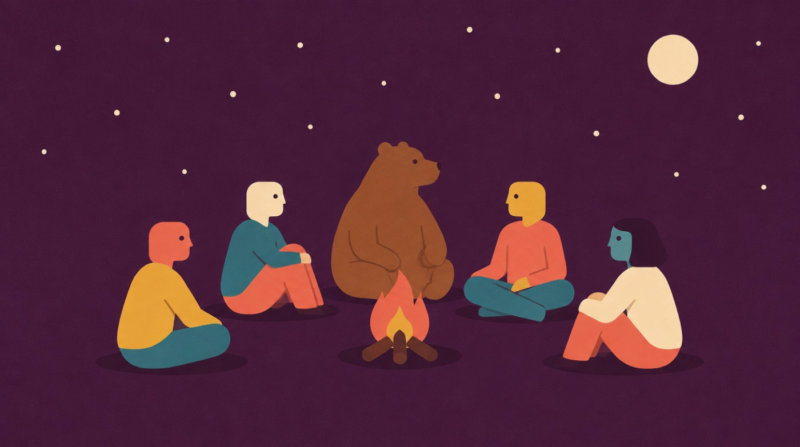
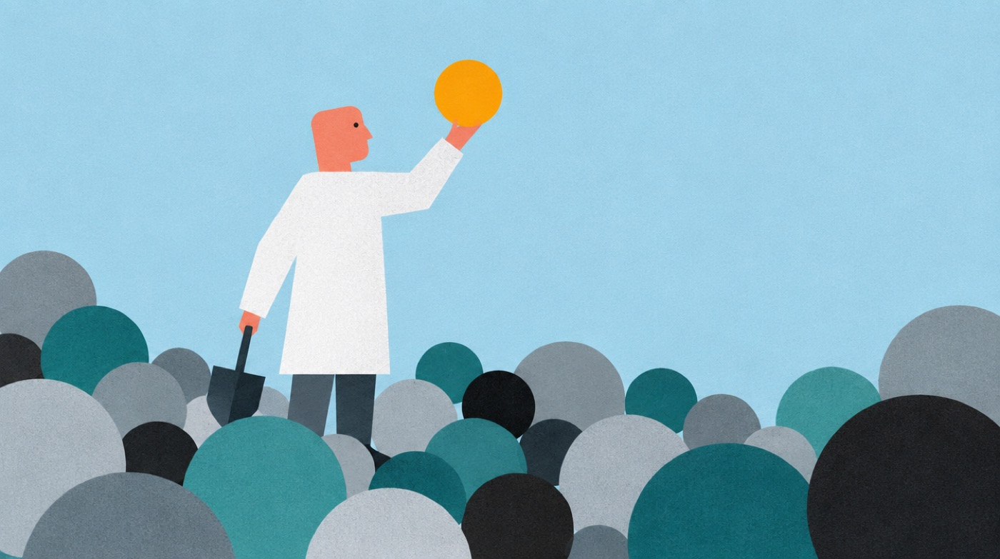
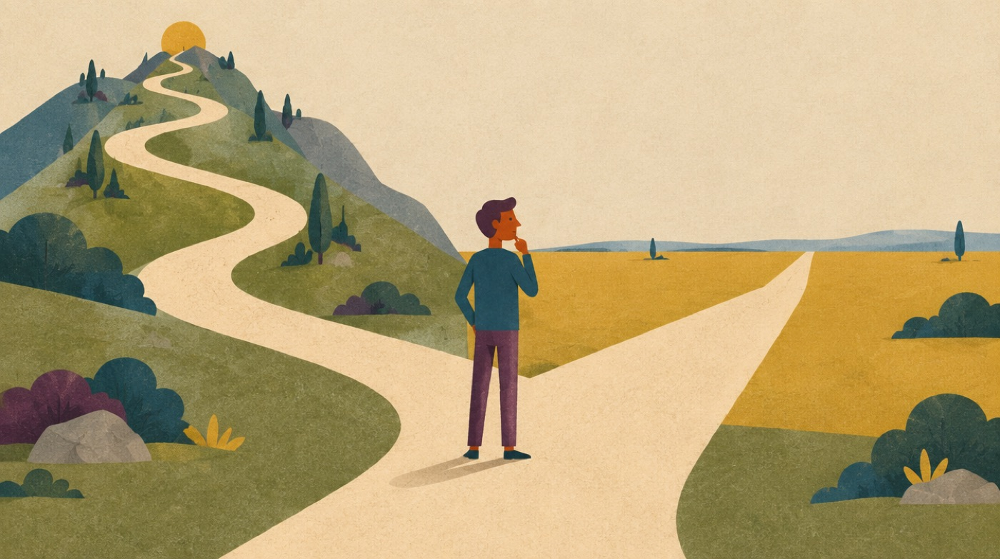
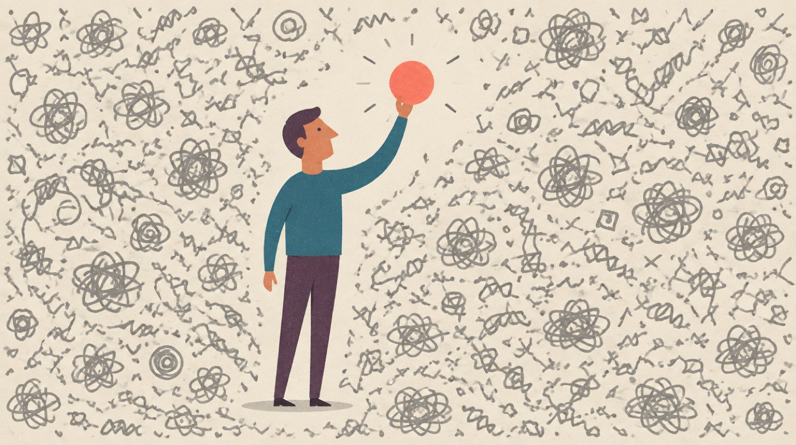
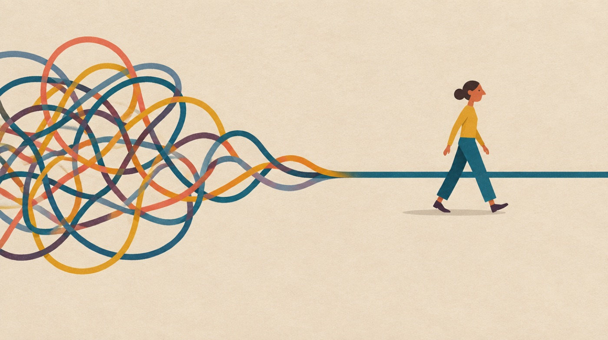

Twelve worked examples. Each is the style prefix plus one subject line — copy the full prompt and paste it into any image AI. The look is Hoffman's own editorial illustration, as used across storytelling.hoffman.com.
Flat vector editorial illustration with a subtle paper-grain, gouache-textured finish. Warm muted editorial palette: coral-salmon red, petrol teal-blue, mustard golden-yellow, cream off-white, plum purple, and muted slate-blue and grey. Stylised human characters with simple rounded or elongated heads, small round dot eyes, a prominent angular nose in profile, thin minimal limbs, flat solid-colour clothing, warm terracotta skin tones. One clear conceptual metaphor, generous negative space, a flat single-colour textured background, soft small drop shadows. Whimsical, intelligent, calm, dry-witted business-editorial mood. Absolutely no text, letters, numbers, words, logos, watermark, or signature.
SUBJECT: two tiny figures stand on a blue mountain peak looking up at a very large coral-salmon monolithic head in profile, like a stone idol.

SUBJECT: a small group sit in a circle around a campfire at night, with a calm bear sitting among them as if listening; small cream moon and scattered stars.

SUBJECT: one figure in a white coat stands among a large field of overlapping flat circles in greys and teals, holding up the single bright mustard circle they have just found.
SUBJECT: two figures stand either side of an oversized flat bar chart, one bar dramatically taller, one figure gesturing towards it.

SUBJECT: one figure stands where a single path splits into two very different roads, one curving up into hills and one running flat into the distance.

SUBJECT: a dense field of small grey scribbles fills the frame, and one figure holds up a single clean bright coral shape pulled out of it.

SUBJECT: a tangled knot of looping lines on the left resolves left-to-right into one clean straight line, a small figure walking alongside.
SUBJECT: two figures shake hands across a gap between two separate platforms, the handshake forming the bridge.
SUBJECT: a small figure pushes a large plain boulder up a gentle slope, a flat sun-like circle waiting over the crest.
SUBJECT: one figure speaks into a large simple broadcast horn, flat concentric arcs rippling outward to several tiny distant figures.
SUBJECT: an oversized flat hourglass dominates the frame, sand part-run-through, a small calm figure sitting on its base reading.
SUBJECT: a figure holds a large simple magnifying glass over a small flat object; through the lens it appears far larger and brighter coral.